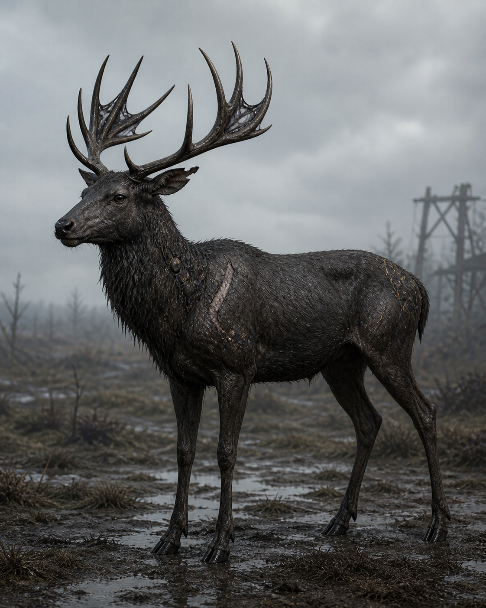
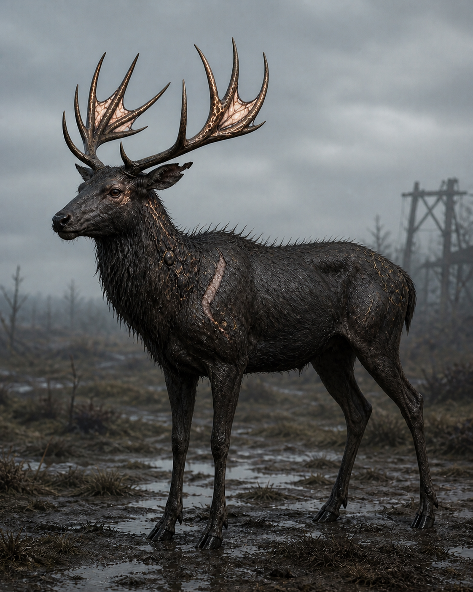
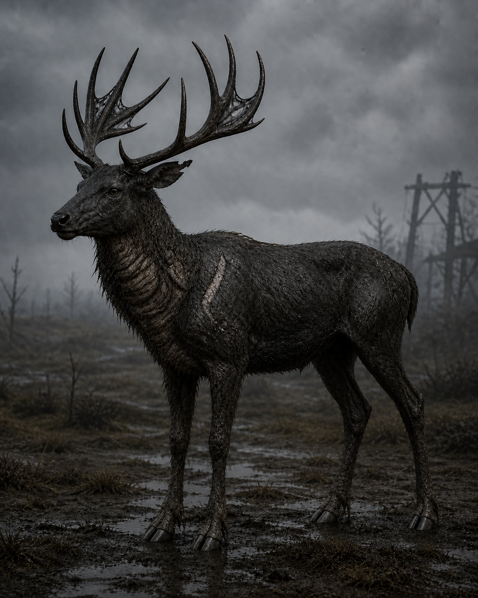
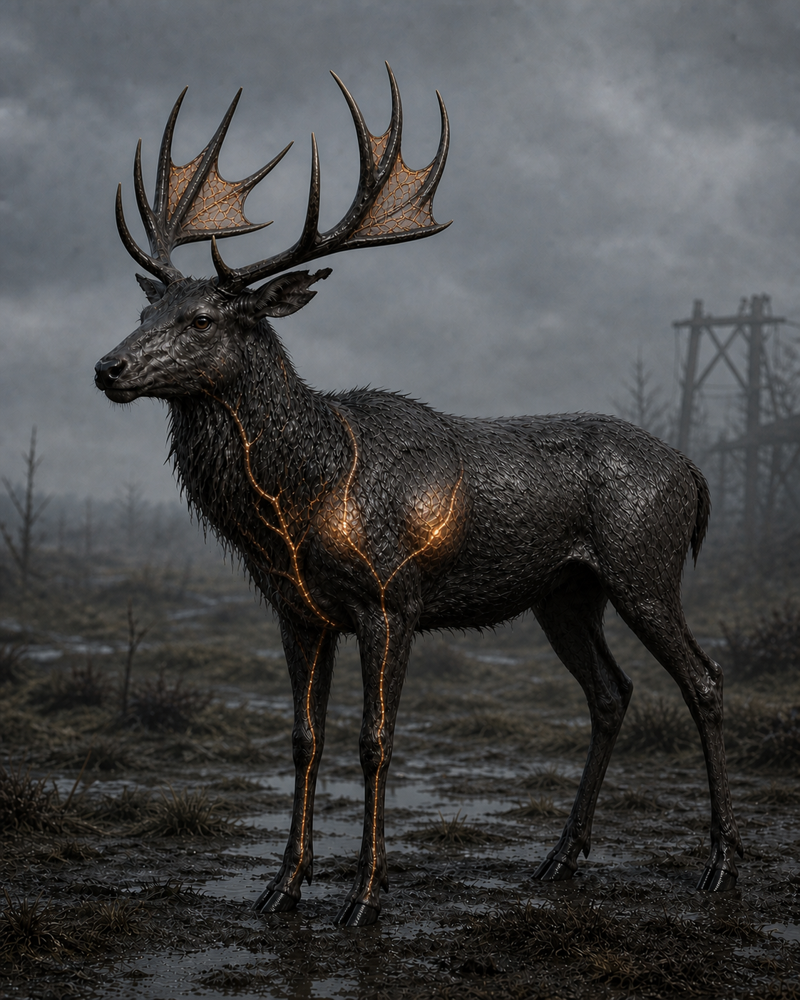
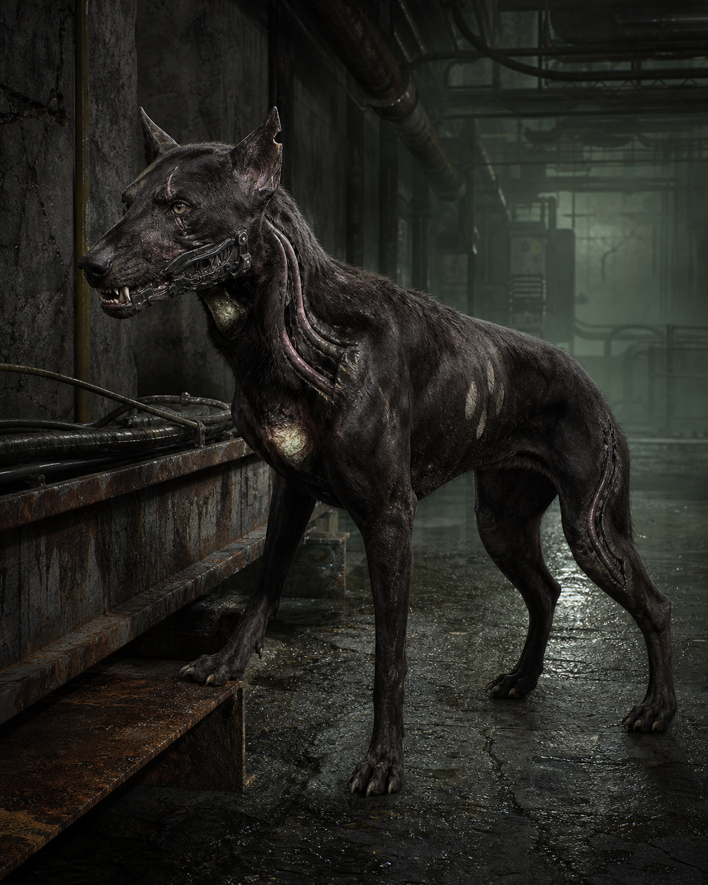
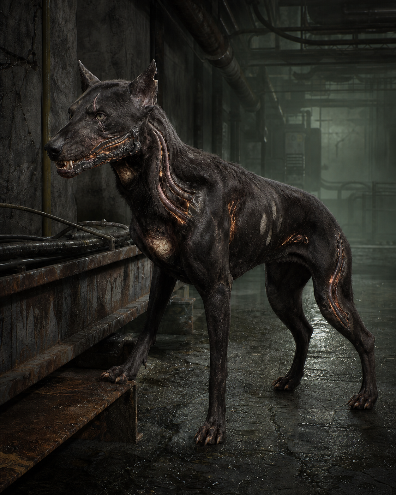
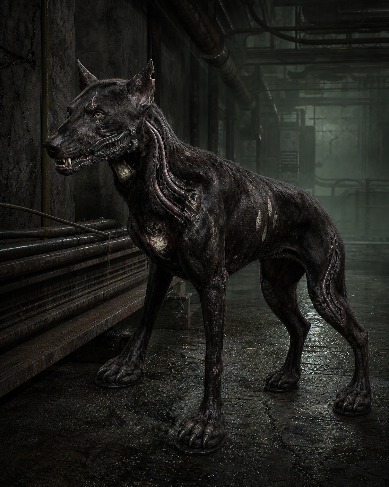
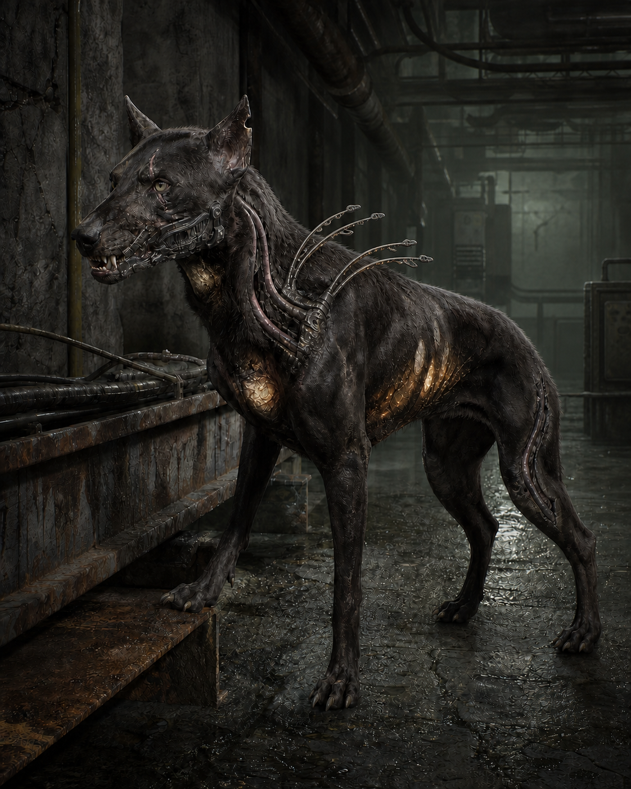
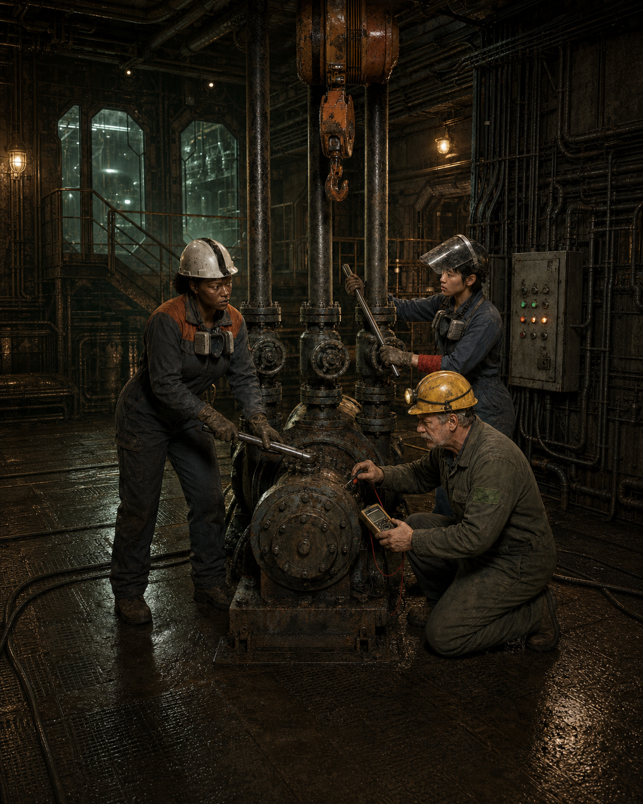
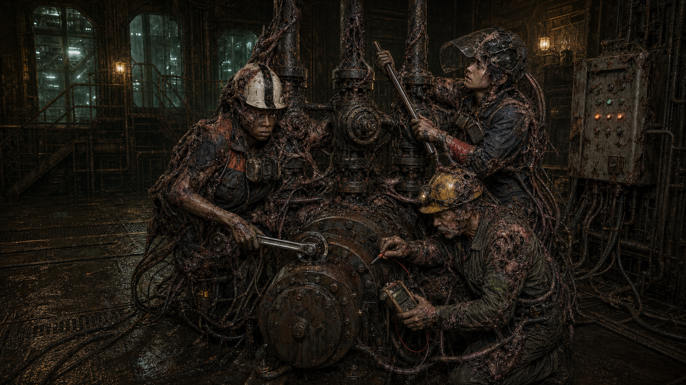

01 · Baseline
Gradient-Sensing Hart
Folded conductive membranes read environmental gradients and bleed minor charge.
folded membranes · restrained nodules · ordinary hooves
Same adult, skull, antler branch map, coat ancestry, scar, ear notch, four limbs, and ordinary ungulate joint plan.

Folded conductive membranes read environmental gradients and bleed minor charge.

Acute pressure lifts membranes, darkens vessels, and prepares rapid grounding.

Mineral tips, neck insulation, and widened hoof contact route charge from the heart.

Broader membranes and two shoulder sacs coordinate herd withdrawal.
Same canine skull, left jaw plate lineage, tendon map, coat/flank identity, four limbs, and machine-contact anatomy.

Integrated jaw plate and cablelike tendons read machinery and pack vibration.

Jaw vents, taut tendons, and swollen contact pads dump heat while mapping live current.

Insulated pads and split claws enable cable-tray and gantry hunting.

Low shoulder cable-combs and rib capacitors coordinate one shared-route discharge.
Human-lineage exceptional evidence, not an Adaptive Mutation ladder. Same people, PPE, tools, operating bay, and maintenance procedure.

Forewoman with torque wrench, tester with green patch, and valve worker with red wrap.

Severe functional integration preserves repeated equipment and procedure without resolving consciousness.